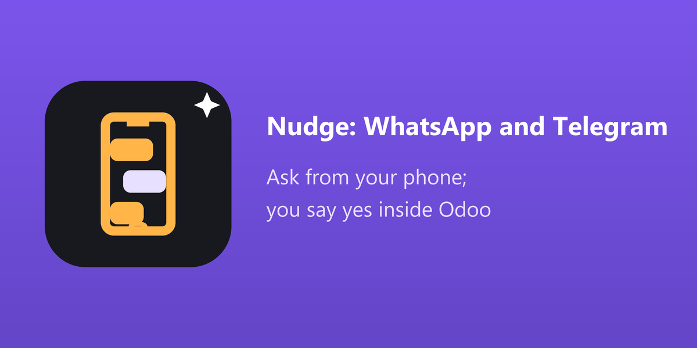

Each person links their own phone with a one-time code from their preferences. What the phone asks runs with that person's rights and companies. A phone nobody linked gets one polite line and nothing else.
"Make a quotation for Raghad" comes back as a link. You read what will be written and press Yes in Odoo. Voice notes and pictures of documents are prepared the same way.
Every message is a request in What Nudge Did, marked WhatsApp or Telegram, with its steps and outcome. The budgets, private mode and the limit of answers at the same time apply.
"كم فاتورة متأخرة؟" "How much did Raghad Trading buy this month?" Short answers, compact lists, and an Open in Odoo link for the record. Any Arabic dialect, and English.
"اعمل عرض سعر لراغد" "Create a task: call Ebrahim tomorrow". Nudge prepares it and sends the approval link. Send a photo of a bill and it prepares the draft.
ffmpeg on the server and a provider that transcribes.